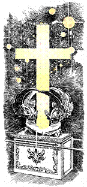

When one catches the spirit of the early Adventists, it is obvious why their disappointment was so great and bitter. Thousands wept until they had no strength to weep. Some were so ashamed to face the mocking world that they dropped out of sight or fled into the wilderness for weeks, even months.
When one sympathetically enters into their experience, it seems inappropriate to join those who ridiculed them. Listen to Hiram Edson
describe the feelings of his heart:
Passing over the other like manifestations of the power of God, we glance at our disappointment at the tenth of the seventh month, 1844. Having the true cry, Behold the Bridegroom cometh, on the tenth day of the seventh month, and having been early taught by modern orthodoxy that the coming of the Bridegroom to the marriage would be fulfilled in the personal second advent of Christ to this earth, (which was a mistaken idea) we confidently expected to see Jesus Christ and all the holy angels with him; and that his voice would call up Abraham, Isaac, and Jacob, and all the ancient worthies, and dear friends which had been torn from us by death, and that our trials and sufferings, with our earthly pilgrimage would close, and we should be caught up to meet our coming Lord to be forever with him, to inhabit bright golden mansions in the golden home city prepared for the redeemed. Our expectations were raised high, and thus we looked for our coming Lord until the clock tolled 12, at midnight. The day had then passed and our disappointment became a certainty. Our fondest hopes and expectations were blasted, and such a spirit of weeping came over us as I never experienced before. It seemed that the loss of all earthly friends could have been no comparison. We wept, and wept, till the day dawn. I mused in my own heart, saying, My advent experience has been the richest and brightest of all my Christian experience. If this had proved a failure, what was the rest of my Christian experience worth? Has the Bible proved a failure? Is there no God, no heaven, no golden home city, no paradise? Is all this but a cunningly devised fable? Is there no reality to our fondest hope and expectation of these things? And thus we had something to grieve and weep over, if all our fond hopes were lost. And as I said, we wept till the day dawn.1
The Adventists defended their Advent experience because they witnessed in it the power of the Spirit in deep repentance, the conversion of souls and a profound and awesome joy in their Advent expectation. A few days before the Great Disappointment, Miller wrote in the Midnight Cry:
If he does not come within 20 or 25 days, I shall feel twice the disappointment I did this spring. But, says my unbelieving neighbor, "If you will be disappointed again, we will not pity you, if you fail." Then so it must be. But one thing I do know, there is glory in my soul now; and I will not spoil that, by doubting, when I have no reason to doubt.2
Even though the Adventists pointed to the godly fruit of the Advent awakening, there was also some acknowledgment of faults. Said Himes in the Midnight Cry of November 7, "That there have been cases
of extravagance, as in all good movements, no one will deny; but these have been caused by influences over which we had no control, and against which we have ever entered our most solemn protest."3 The October 31 issue of the same paper appealed to Adventists to help those who had rashly left their employment and secular pursuits and had suffered destitution.
In the December 5 issue of the same journal, Miller wrote a letter which is a model of restraint, charity and encouragement. He frankly
acknowledged their mistakes:
In 1839 and 1840, the opposition to the doctrine began to rage, united with ridicule and misrepresentation. The Universalists commenced the contest, and were followed by every sect in our country. Then the brethren who loved the appearing of our Savior, found themselves among opposers. And instead of meeting sound argument and light among their former brethren, they were almost universally met with scoffing, ridicule, and misrepresentation. Odious names and cruel epithets were applied to us; and in many cases our motives were impugned, and a war of extermination was commenced against the Advent faith. Many of our brethren caught a measure of this spirit, and began to defend themselves in like manner, against the attacks of the several sects. The name of "Babylon," and I am sorry to say it, was applied to all of our churches without any discrimination, although in too many instances it was not unjustly applied.4
The aftermath of the Great Disappointment was an absolute shambles for the Adventists. The Millerite ship smashed to pieces on the rocks of the Disappointment. In April, 1845, the Millerite leaders called a conference at Albany, New York, to discuss the terrible disarray and to end the confusion and division. Miller described the situation in these words: "It need not be replied that it was convened to deliberate respecting, and if possible to extricate ourselves from the anarchy and confusion of BABYLON in which we had so unexpectedly found ourselves."5 It was ironic that Miller should call his own followers "Babylon." Less than twelve months before, the seventh-month movement had proclaimed that the churches were Babylon.
——————————————————
1 Hiram Edson, manuscript fragment on his "Life and Experience," n.d., pp. 4-5, Ellen G. White Research Center, James White Library, Andrews University, Berrien Springs, Mich.
2 William Miller, "Brother Miller's Letter, on the Seventh Month," Midnight Oy, 12 Oct. 1844, pp. 121-122.
3 Joshua V. Himes, "Second Advent. Mr. Himes's Statement to the Public," Midnight Cry, 7 Nov. 1844, p. 149.
4 William Miller, "Letter from Win. Miller," Midnight Cry, 5 Dec. 1844, pp. 179-80.
5 William Miller, "The Albany Conference," Advent Herald and Signs of the Times Reporter, 4 June 1845. p. 129, cited by P. Gerard Damsteegt, Foundations of the Seventh-day Adventist Message and Mission, pp. 113-14.